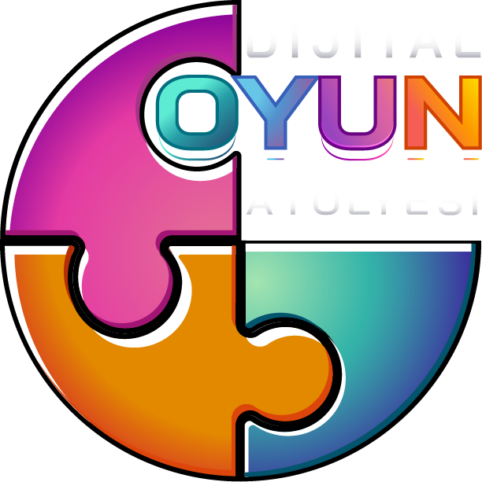

Görsel kartları doğru renkteki kutulara sürükleyip bırakın. Dilerseniz önce karta tıklayıp ardından doğru kutuya tıklayarak da taşıyabilirsiniz.
Renkleri eşleştirme, motor becerileri ve görsel ayrıştırma yeteneğini destekler.
Kırmızı meyveleri buraya taşıyın
Yeşil meyveleri buraya taşıyın
Lütfen en iyi oyun deneyimi için cihazınızı yatay (landscape) konuma getirin.